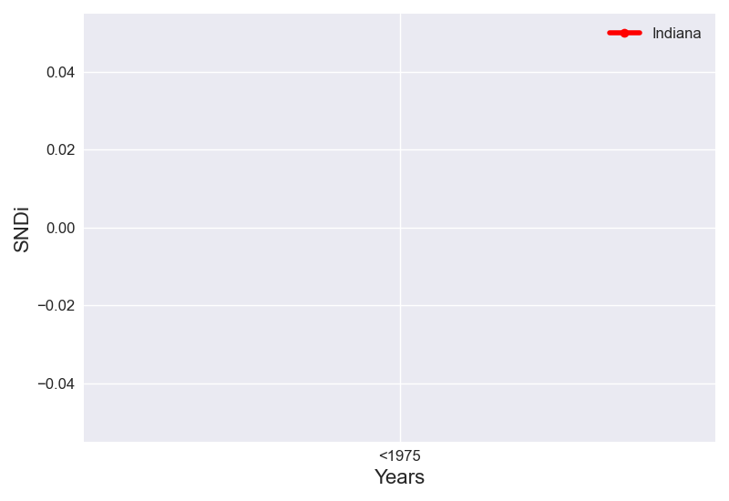

The cumulative and incremental level of street network disconnectivity in Indiana do not follow the same trend. Cumulative SNDi is increasing steadily over time.
Taking into account all roads in Indiana, the overall level of street network sprawl is 3.51. In Indiana, new street layouts initially increased in level of sprawl, until the peak in 1991-2000.
The levels of SNDi for each time period in Indiana's 4 most populous cities are plotted too. The cities in Indiana that do not follow the same trend in SNDi are: ['Indianapolis', 'Lafayette'].
To date, Indiana is the 30th-most disconnected region out of the 47 regions in United States. It has largely maintained its place in the ranks since 1975. In <1975, it ranked 31st, ranked 32nd in 1976-1990 and ranked 21st in 1991-2000 and ranked 21st in 2001-2014.